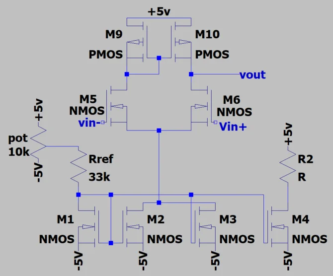

ANALOG CIRCUIT DESIGN / LAB 6
DISCRETE MOSFET OP-AMP
Built a multistage CMOS operational amplifier from transistor-level components.


ANALOG CIRCUIT DESIGN / LAB 6
Built a multistage CMOS operational amplifier from transistor-level components.
